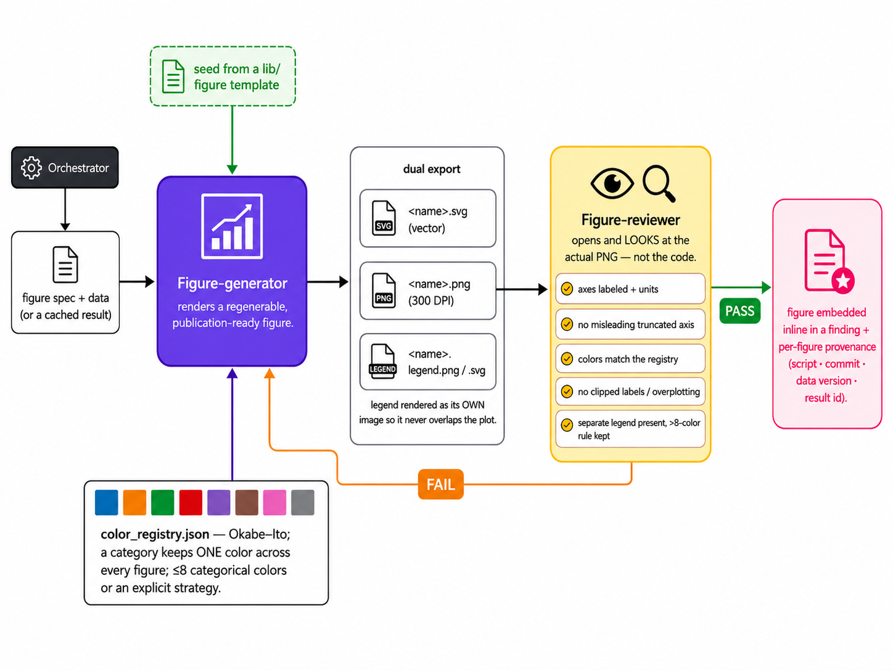

Publication figures
The figure generator
Regenerable, publication-ready figures with registry colors and a separate legend — reviewed by inspecting the actual PNG, not the code.

Regenerable, publication-ready figures with registry colors and a separate legend — reviewed by inspecting the actual PNG, not the code.
